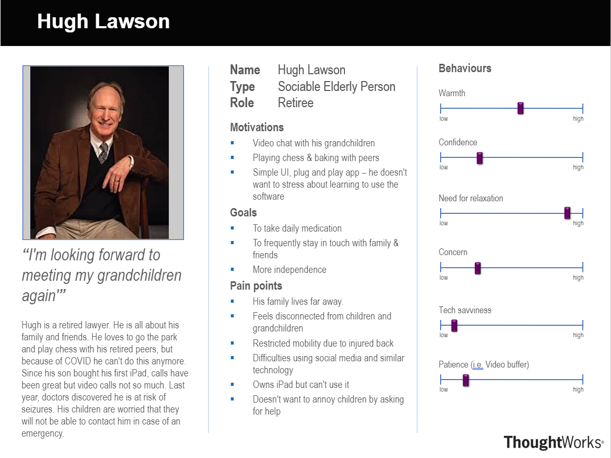
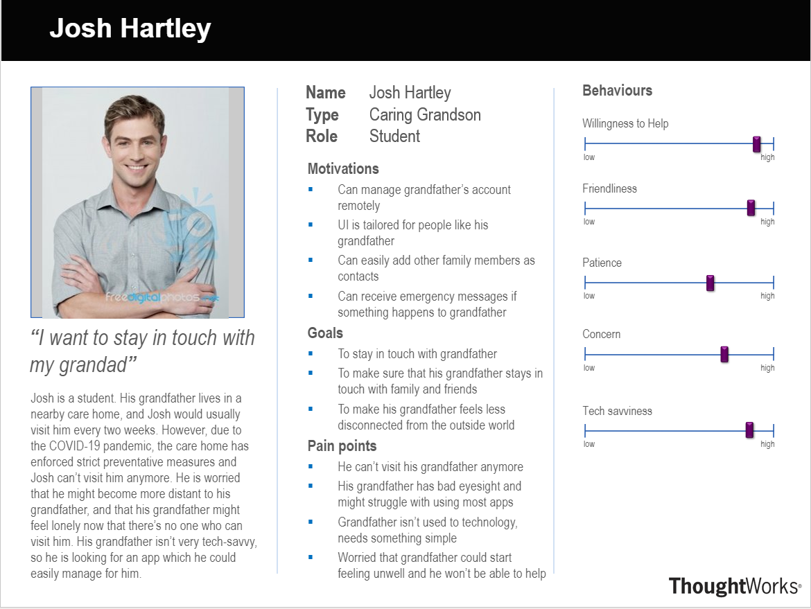

Project Background
Covid-19 has highlighted society's need to help people in social isolation, particularly amongst our most vulnerable – the elderly. Social Isolation over prolonged periods can have serious consequences in terms of mental and physical health [1,2]. Our client, IBM, has several 'FISE' (Franklin Immersive Social Engagement) projects which all are orientated around the development of open-source applications that help with social integration amongst the elderly and those in social isolation. Our group is working on of these FISE projects - 'Social Isolation Assistance with Simplified Calling'.
Project goal
Our project goal is the development (proof of concept) of an interactive, privacy-safe, video calling platform for the elderly and others
in social isolation. This platform's accessibility and design should be simple and tailored for the elderly both at
care-homes and residential homes. The platform should also be integrated with other FISE apps (Concierge and AskBob) to
set the building stones for a wider integrated FISE ecosystem.
*Note that the goal of this project has changed over time per the request of our clients.
Requirements gathering
In order to understand the requirements of our clients further, we arranged a video-conferencing meeting with them. During the meeting, our clients gave us a list of requirements and pointed out the priority of each requirement. In subsequent meetings, we further clarified any ambiguities and made a MoSCoW list with all the requirements.
Here is an example of questions that we asked during our meetings:
- What are the key platforms this will be used on?
- What IBM Watson services should be provided?
- Conservative or Modern design? Based on research or more traditional web design guidelines?
- What user data should be stored?
User Interviews
Following our client meetings, we set up interviews with our users. Below are some of our transcripts from our primary users - elderly.
Elderly user 1
Q: What people would you like to stay connected with through a video calling app?
A: Primarily family and friends.
Q: Do you usually use phone or desktop apps?
A: No, I find them hard to operate with as they require a lot of dedication to learn.
Q: What troubles you most about using apps?
A: They are all different and can let you down sometimes.
Q: What do you think about the ability to execute voice commands?
A: Sounds great. If the computer can understand you well, might be easier than scrolling through a very large list of
elaborate commands.
Q: How about online board games with friends (i.e. chess)?
A: That would be very interesting.
Elderly user 2
Q: Would you agree to share your data with renowned institutions such as NHS?
A: Yes, I don't mind them knowing. All I want is to be aware when this is happening.
Q: Will you use this app for recreation?
A: Mostly. I want to be able to have about 10 people in the meeting without much effort.
Q: Do you have trouble reading small-sized texts?
A: Yes. It starts to feel exhausting after a while.
Q: Would you create an account to use our app?
A: Probably. But I would be very frustrated if I must remember and type in the credentials every time. Preferably, I should
not need an account or my relatives would handle the account for me.
Q: Would you use a feature that allows you to check in every day and notify your family that you're not fine?
A: Yes, I'm living alone due to the pandemic, so I'm sure that knowing that I'm okay would put my family at ease.
Use case diagram
To make the use case of our project more clear, we decided to express it using a diagram.
Use case list
Administrator
The admin’s role lies in managing a user’s (elderly) account. An admin’s main use cases include:
- Providing users with their OTC (one time code) which can be viewed on the dashboard.
- Adding and editing user data, which involves:
- Adding, deleting and changing the settings of backgrounds.
- Changing the names of users
- Changing privacy settings for users (by enabling or disabling cloud features).
- Adding and editing contact data, which involves:
- Changing the names, emails, phone numbers and relation of contacts.
- Setting contact profile pictures.
User
The admin’s role lies in managing a user’s (elderly) account. An admin’s main use cases include:
- Sending emergency messages if they are in distress.
- Using voice commands to perform in-app tasks such as changing backgrounds or calling contacts, or to receive various information such as weather forecasts, recipes for food, etc.
- Using plugins to gain access to various features (which can be set by a developer), such as live news feeds or games.
- Calling their contacts through Jitsu.
Personas
{kind=link}
Hugh Lawson (elderly person) Hugh is a retired lawyer who lives far away from his family and can't visit them or his friends due to the COVID-19 pandemic. He is also isn't very tech-savvy, so he wants to find an easy-to-use video calling app or site which would allow him to stay in touch with his family and friends. Hugh's grandson recommended him to use FISE's video calling app as it is privacy-safe and would not require him to log in with a user-name and password, but only a one-time code. He found it easy to start a call because the layout is simple and similar to other video calling apps/websites. He also found calling and inviting his friends and family into the call to be straightforward, either just pressing on their image or sharing a link. Hugh suffers from occasional seizures, which is why he tried out the check-in feature for a few days, which he found to be an incredibly useful and quick method to notify his family that he is doing fine.
Josh is a student. His grandfather lives in a nearby care home, and Josh would usually visit him every two weeks. However, due to the COVID-19 pandemic, the care home has enforced strict preventative measures and Josh can’t visit him anymore. He is worried that he might become more distant to his grandfather, and that his grandfather might feel lonely now that there’s no one who can visit him. His grandfather isn’t very tech-savvy, so he is looking for an app which he could easily manage for him.
MoSCoW
Functional
| ID | Requirements | Priority |
|---|---|---|
| 1 | Videocall invites through email | Must have |
| 2 | Videocall Invites through SMS | Must have |
| 3 | Option to upload custom background images, both static and interactive 360 VR images. | Must have |
| 4 | Background images should have option be uploaded using URL (no need to have the image locally on device) | Must have |
| 5 | Voice clip feature for emergency check-ins. "I'm ok" "I don't feel well". | Must have |
| 6 | Capture a call log | Must have |
| 7 | Voice commands (i.e. call contact) through IBM Watson | Should have |
| 8 | Integration of other FISE apps (FISE AskBob) | Should have |
| 9 | Show disclaimer about browser restrictions | Should have |
| 10 | Loading screen with FISE logo and information | Should have |
| 11 | Option to select between IBM Watson and Askbob (privacy choice) for voice commands in the the account management/dashboard page | Should have |
| 12 | Elderly should have access to custom plugins/apps (and developers should be able to create new plugins/apps) | Should have |
| 13 | Customizable (for developer use) HTML page that displays plugins/apps | Should have |
| 14 | Ability to upload and display contact profile pictures so that elderly easily can recognize contacts | Should have |
| 16 | Access to FISE Concierge voice commands | Could have |
| 17 | Watch parties (streaming or livestream or similar) | Could have |
Non-Functional
| ID | Requirements | Priority |
|---|---|---|
| 1 | No account management required by elderly (i.e. no need for username and password for them to login) | Must have |
| 2 | Demonstrate cross-platform functionality (i.e. tablet, phone, pc) | Must have |
| 3 | App UI (accessibility) should be tailored for elderly | Must have |
| 4 | Deployable to server by tech-savvy | Must have |
| 5 | Simple local deployment for non-tech savvy | Must have |
| 6 | Video call frame (Jitsi) should be multilingual | Must have |
| 7 | Adapt to Progressive Web App (PWA) standards | Should have |
| 8 | User-demo testing on multiple devices | Should have |
| 9 | Option to use local speech synethesiser (privacy choice) | Could have |
| 10 | Multilingual SMS invites | Could have |
| 11 | Free open-source games added in plugins/apps menu | Could have |
References
[1] W. Sepúlveda-Loyola et al., “Impact of social isolation due to COVID-19 on health in older people: Mental and
physical effects and recommendations,” J. Nutr. Health Aging, vol. 24, no. 9, pp. 938–947, 2020.
[2] A. Hajek and H.-H. König, “Social isolation and loneliness of older adults in times of the COVID-19 pandemic: Can
use of online social media sites and video chats assist in mitigating social isolation and loneliness?,” Gerontology,
vol. 67, no. 1, pp. 121–124, 2021.